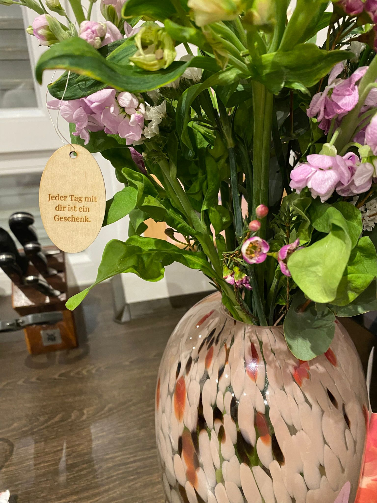
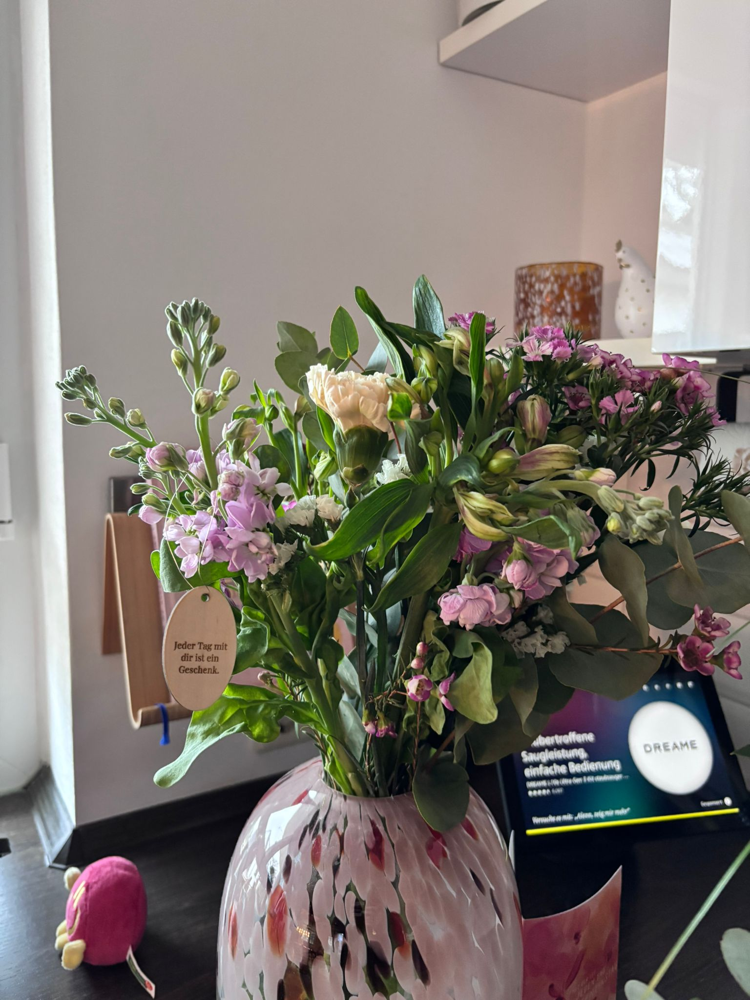
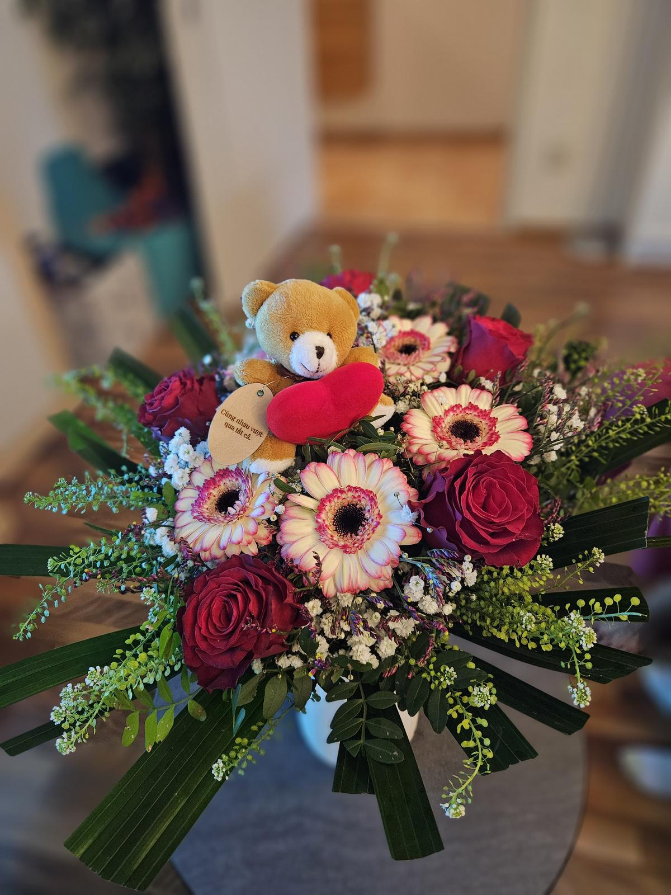
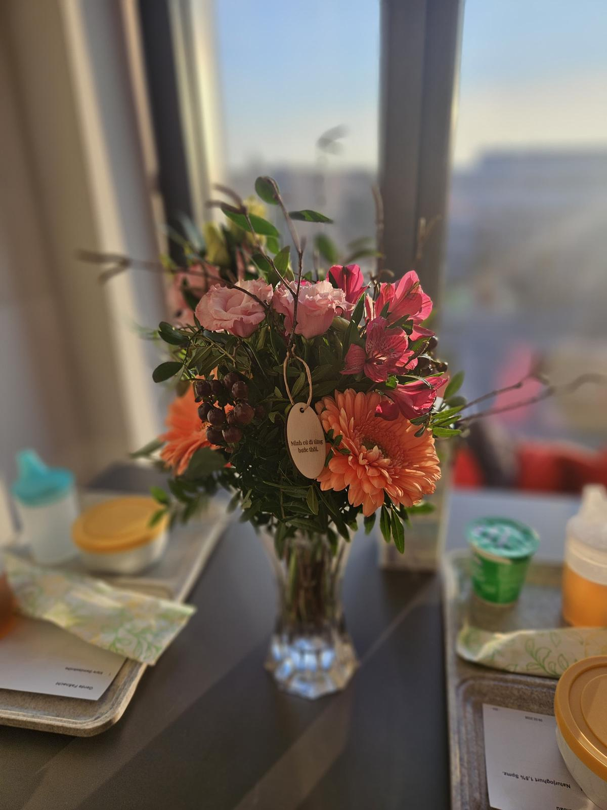

Blumenanhänger
Ein kleines Stück Holz — eine große Geste.




Das Projekt
Blumen vergehen, aber dieser Anhänger bleibt. Kleine gravierte Holzanhänger, die an Blumensträußen befestigt werden, machen aus einem schönen Strauß ein unvergessliches Geschenk.
Mit einem persönlichen Namen, einem Datum oder einem kurzen Satz wird der Anhänger zum stillen Träger einer Botschaft.
Was ich gemacht habe
Die Anhänger wurden aus Lindenholz ausgeschnitten und individuell graviert. Das Format ist bewusst klein gehalten und ist somit unaufdringlich, aber bedeutsam.
Nach dem Anlass können sie als Andenken aufbewahrt werden.
Details
Material: Lindenholz · Technik: Lasergravur & Laserschnitt · Anlass: Geburtstag, Dankbarkeit, Hochzeit
Du möchtest deinen Blumenstrauß mit einem persönlichen Anhänger verschenken?
Ähnliches Projekt anfragen →